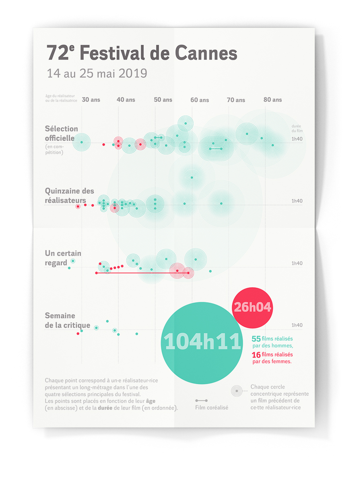
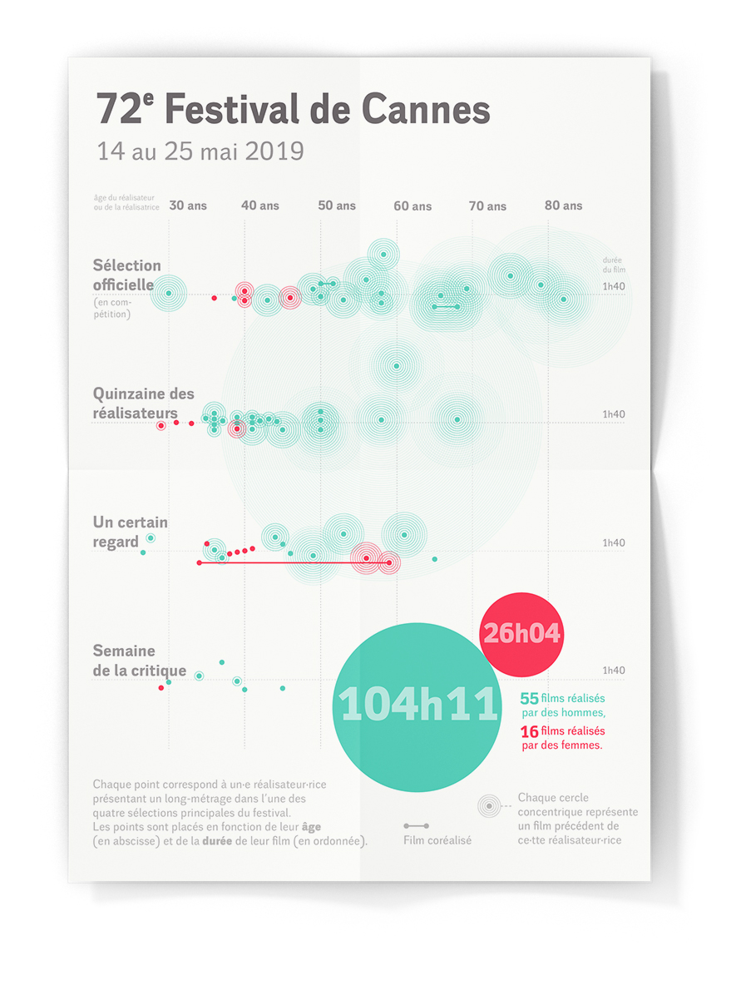

The 72nd Cannes Film Festival in dots
data-visualization · May 2019
In 2018, Thierry Frémaux, the director of the Cannes Film Festival, has made a promise to give more space to female filmmakers in the festival — but in 2019, not much seems to have changed. I decided to analyze the different selections of the 72nd edition of the festival to see how women were represented in each selection. I collected the data, wrote a program on Processing, and worked on Adobe Illustrator to create this visualization. Each dot represents a filmmaker, each concentric circle being one of his previous movies. The dots are placed according to the length of the movie (vertical axis) and the age of the filmmaker (horizontal axis).
 
